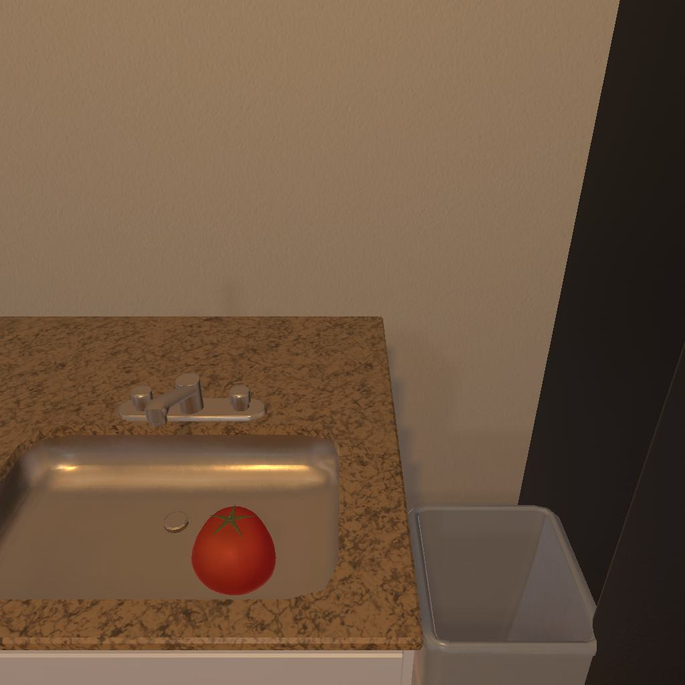

---------------------------------------------------------task: 13---------------------------------------------------------
--------------------------------------------------------------------------------------------------------------------------------------------------------------------
--------------------------------------------------------------------------------------------------------------------------------------------------------------------
Step:--------------------------------------------------------------------------12-------------------------------------------------------------------------------
----------------------------------------
VLM Prompt:
Image1:
Image2:
**Instruction**
1. Analyze the provided images to identify all visible household objects and compare the difference between images (e.h. whether the object is opened or not and taken on hand or not), focusing on those relevant to the task description "clean some tomato and put it in garbagecan."
2. Use the analysis of images and the task hint "The agent must find an object of the desired type, pick it up, go to a sink or a basin, clean the object with a sink or basin, and then find the correct location to place it and put it down there. The agent does not need to use soap bottle or faucet to clean the object, and the agent just needs to do action that is "clean the object with the sink or sink basin"." to answer the question: what is the most reasonable action in the choices for the task description "clean some tomato and put it in garbagecan"?
3. Decide and write the answer using the template: The answer is: (i): , where i is the real number. If there is no desired object in images, search every place based on **Initial Observation** to find the object. And if no one is exactly correct, choose a similar answer.
**Initial Observation**
You are in the middle of a room. Looking quickly around you, you can see countertop (1-2), cabinet (1-11), garbagecan (1), toaster (1), sinkbasin (1), fridge (1), sink (1), microwave (1), drawer (1-3), stoveburner (1-4), coffeemachine (1), diningtable (1)
**Answer Choices**
(1): go to countertop 1
(2): go to cabinet 1
(3): go to cabinet 2
(4): go to cabinet 3
(5): go to cabinet 4
(6): go to toaster 1
(7): go to sinkbasin 1
(8): go to fridge 1
(9): go to sink 1
(10): go to cabinet 5
(11): go to microwave 1
(12): go to countertop 2
(13): go to cabinet 6
(14): go to cabinet 7
(15): go to drawer 1
(16): go to stoveburner 1
(17): go to stoveburner 2
(18): go to cabinet 8
(19): go to drawer 2
(20): go to stoveburner 3
(21): go to stoveburner 4
(22): go to coffeemachine 1
(23): go to cabinet 9
(24): go to cabinet 10
(25): go to cabinet 11
(26): go to diningtable 1
(27): go to drawer 3
(28): take tomato 1 from garbagecan 1
(29): take faucet 1 from garbagecan 1
(30): examine garbagecan 1
**Answer**
Let's think step by step by following the instructions.
----------------------------------------
----------------------------------------
Original Response:
Firstly, we need to identify all visible household objects in the images provided. In both Image1 and Image2, we can see a tomato on the sink basin and a garbagecan next to the countertop. There are no other relevant objects visible in the images that pertain to the task description.
The task description states "clean some tomato and put it in garbagecan." Based on the task hint, the agent must find the tomato, pick it up, go to a sink or basin, clean the object, and then find the correct location to place it, which in this case, is the garbagecan.
Since the tomato is already on the sink basin, the reasonable action would be to clean the tomato. However, the provided answer choices do not include an action to clean the tomato. Instead, the closest relevant action is to take the tomato from the garbagecan, which is action (28). This action is not correct as per the task description since the tomato should be cleaned first. But since there is no option to clean the tomato and the tomato is already on the sink basin, we can infer that the tomato might have been cleaned already.
Therefore, the next reasonable action would be to put the cleaned tomato in the garbagecan. Since the answer choices do not provide a direct action to put the tomato in the garbagecan, we will select the action to take the tomato, assuming it has been cleaned, and the next step would be to dispose of it.
The answer is: (28): take tomato 1 from garbagecan 1.
----------------------------------------
----------------------------------------
>>> Refine Original VLM Response and Get Pure Action: take tomato 1 from garbagecan 1
----------------------------------------
-----------------------------------------------------------------
Running time: 25.65614080429077 seconds
Total Money: 6.144390000000003
-----------------------------------------------------------------
-----------------------------------------------------------------
Text Observation:You pick up the tomato 1 from the garbagecan 1.
-----------------------------------------------------------------
UNSUCCEED